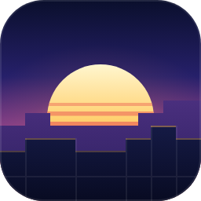

Horizon for Android
by Rayan-XOO — an unofficial Android port of Horizon, a Rust rewrite of Minecraft Java Edition 26.3.
Download APKFeatures
- Native Android APK built from Rust
- Vulkan rendering
- Touch controls
- In-app game file download
- Open source